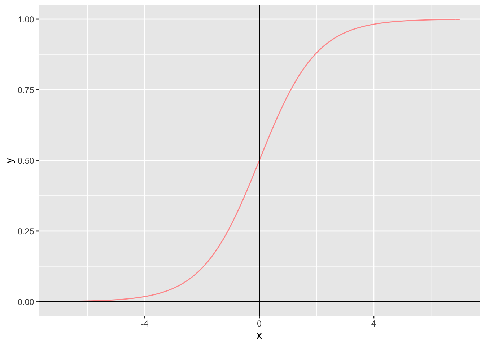
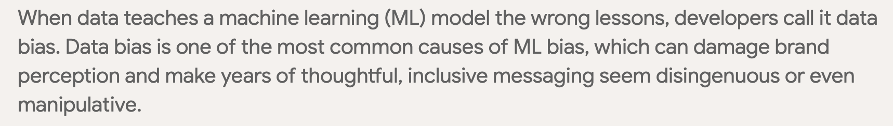

Chapter 9 Machine Learning
In diesem Kapitel, werde ich vertiefter in das Thema “Machine Learning” eingehen.
9.1 Typen von Machine Learning
Es gibt grundsätzlich 2 Kategorien, in denen die verschiedenen Methoden in Machine Learning eingeordnet werden:
- Supervised Learning
- Goal 1: Classification
- Image Classification
- Goal 2: Predictions with Regressions
- Translation (zum Beispiel angewendet in Deepl.com)
- Image Captioning (siehe Bild):
- Goal 1: Classification
- Unsupervised Learning
- Clustering:
- Matching // K-Means Clustering
- Dimension Reduction:
- Principal Component Analysis (PCA)
- Outlier Detection
- Clustering:
9.2 Supervised Learning
Bei Supervised Learning wird die Annahme gemacht, dass man die Funktion ‘f’ kennt, um mittels den Werten der Zufallsvariablen ‘X’ die Werte der Zufallsvariablen ‘Y’ herauszufinden.
Mathematisch ausgedrückt: f : X -> Y.
9.3 Methods
Hier soll eine Auflistung aller Vorgehen bei Machine Learning aufgelistet werden:
Algorithm for “best fit” to find the weights:
Guess some random weights.
“Go downhill”, e.g. apply a learning rate when using the method gradient descent.
Is the fitted line good enough?
- If the answer is “no”, then go back to point 2).
9.4 Wichtige Funktionen
Da Machine Learning mittels Aktivierungsfunktionen funktioniert, folgt eine Übersicht zu verschiedenen Funktionen:
- Identity Function: damit ist die Funktion
f(x) = xbzw.y = xgemeint:

- Logitstic Function // Sigmoid Function // S-Shaped Function: damit ist die Funktion \(\sigma(x) = \frac{1}{1 + e^{-x}}\) gemeint:

9.5 Difference between Training-, Validation- & Test-dataset
Since I started with Machine Learning, I was always confused about the concept of data splitting, e.g. which sub-set of the entire dataset is now considered to be the training dataset, which one is the validation dataset and which one is the testing dataset.
In the graph below, you see how it is defined correctly:
Training Set VS. Validation Set VS. Test Set
- Important to note: There is oftentimes confusion between the definition of validation dataset VS. testing dataset, because there is no consens about it. Therefore - and if we take the above picture as the “true” definition - some people will call the validation dataset the “test dataset” and vice versa, e.g. the test data as the “validation data”! xD
9.5.1 Validation-Set VS. Test-Set
What is the difference between a
Validation Datasetand aTesting Dataset?
Es gibt keinen Konsens dafür, was nun das validation dataset und welches das test set genau ist. Nima (= mein Mentor bei der SBB) verwendet den Begriff test set für dasjenige Dataset, welches hold out // separat für die (spätere) Prediction verwendet wird.
- Regel zu Unterscheidung der beiden Terme: Wenn steht:
we hold out [name of the set], dann ist es dastesting dataset.
9.5.2 Reason for a Validation-Set
Why do we need
validation set?
At the end, you want the best model possible. If you want to tune your hyperparameters, you will need your test set. The big problem here, however, is that - if we use the test-set more than once when wanting to find out the best hyperparameters - our model will know the data by heart and the predictions will be too good, but only on this dataset that you are currently using! The model will not generalize well on new data.
That’s why we need this additional subsetting of the training-dataset!
9.6 Concept of Stratification
Angenommen du hast eine kategorische Y-Variable, welche entweder Nullen oder Einsen als Werte annimmt. Nehme nun an, dass - im Training-Dataset - der Anteil der Nullen 60% beträgt. Wenn du nun ein stratified Sample willst, dann wird das Test-Dataset ebenfalls einen Anteil von 60% an Nullen enthalten!
9.7 Cross-Validation
The concept of cross-validation can be splitted into 2 parts:
- Step 1: Split your dataset into 1 training- & 1 test-set.
- Rule of Thumb: Usually, the split is 70-90% training set and 10-30% for the test-set.
- Code Example:
Example of Code for Train-Test Split
- Step 2: Now, we divide the training set further, such that it will contain - if we assume a 3-fold cross-validation as an example - 3 different validation sets and 3 training sets.
Allgemeine Cross-Validation
9.7.1 Special Case: Cross-Validation for Time-Series Data
Because time-series are ordered, since the flow of time is only going forward, the graph shown above for step 2 is not valid and we need another approach!
Cross-Validation for Time Series
This picture shows an example of a 3-fold cross-validation for a time-series.
9.7.1.1 The Expanding-Window Cross-Validation | Variante 1
One version of the special-case “CV for time-series” is the so-called Expanding-Window Cross-Validation.
In this CV, we expand the number of training-data progressively, until we reach the end of the training-set.

Visuelle Darstellung, wie der verschiedenen Validierungs-Fehler (MAPE, MAE oder RMSE) berechnet werden auf dem Trainingsset.
- Achtung: Vergesse nicht, dass jeweils bloss ein durchschnittswert pro Tabular-Regression ausgerechnet wird! _Wenn du also nicht zufriedenstellende Prognosen
9.7.1.2 The Sliding-Window Cross-Validation | Variante 2
In this CV, we start with a first BIG sub-training dataset. For the second fold - however we only take the most recent past data to predict the. the number of training-data progressively, until we reach the end of the training-set.
Example of a 18-fold Sliding-Window Cross-Validation
9.7.1.3 What are the Advantages / Disadvantages of those two types of Cross-Validation?
- The
Expanding Windows Splitteris **less volatile when a big macroeconomic shock occurs, like the COVID-19 crisis. However, the model reacts more slowly // is more sluggish (= träge), when it enters a “Regime-Wechsel” (= Zustandsänderung an den Märkten). - The
Sliding Windows Splitter, it is the opposite: **(much) more volatile when a big macroeconomic shock occurs, like the COVID-19 crisis. However, the model reacts more quickly, when it enters a “Regime-Wechsel” (= Zustandsänderung an den Märkten).
Expanding-Window VS. Sliding-Window: Vergleiche jeweils hell-rot mit dunkel-rot ODER hell-blau mit dunkel-blau, um den Verlgeich zwischen Expanding- & Sliding-Window zu sehen.
9.7.2 Why do we use Cross-Validation?
There are 2 reasons:
- It allows us to compare the score (MAPE, MAE or RMSE) of different model set-ups, for example:
- CV-Scheme changes, e.g. a Time-Series Prophet-Model with a
Sliding-Windowof 4 Months VS. a Prophet-Model with anExpanding-Window(full past). - OR changes in the covariates, e.g. a model that includes an important covariate, while the other model does not. This will allow you to draw conclusions regarding the selection of “the best” model.
- It allows you to assess the performance of different machine-learning methods. In a classification-setting for example, you can use the confusion-matrix.
9.8 Normalisierung der Daten
Was versteht man unter
Normalisierung? Was sollte man dabei beachten? Warum wird in einem Pre-Processing Schritt eine Normalisierung durchgeführt?
Normalisierung == Subtrahiere den Mittelwert und dividiere durch die Standardabweichung jedes Merkmals. Es sollte beachtet werden, dass der Mittelwert und die Standardabweichung nur anhand der Trainings-Daten berechnet werden sollte, damit die Modelle keinen Zugriff auf die Werte in den Validierungs- und Testsätzen haben.
Es ist wichtig, Features zu skalieren, bevor ein neuronales Netzwerk trainiert wird. Normalisierung ist eine gängige Methode für diese Skalierung.
9.9 RNN
Was macht ein
Reccurrent Neural Network (RNN)?
Ein Beispiel für ein RNN wäre ein Long Short Term Memory Modell (LSTM Modell). Dabei nimmt das RNN zunächst ein ganz kleines Vergangenheits-Intervall, macht eine Modell-Estimation und dann - im nächsten Schritt - wird ein grösseres Vergangenheits-Intervall verwendet (inkl. predicted Y-Variable aus dem vorherigen Modell), um eine neue Modell-Estimation zu machen etc.

Beispiel eines RNN: hier ein LSTM
9.10 Data-Pipelines
Data Pipelines use an input to produce an output and then - on a second step - use the produced output as an input to produce another output etc…
- Visualisierung: Du kannst dir unter Data Pipelines nichts anderes als eine “Guetzli Fabrik” vorstellen, welche diverse Produktionsmaschinen verwendet - zum Beispiel einen Teig-Cutter, dann einen Butter-Schmierer, sowie einen fetten Ofen und einen Sortierer von “guten VS. schlechte Guetzli” - um die Inputs immer weiter zu verarbeiten, sodass schlussendlich ein Endprodukt (= die fertigen “Guetzli”) ensteht, dass man verkaufen kann.
- Ziel von Data-Pipeline: Write more clean // readable code, especially when you do data cleaning. A datapipeline is basically a way of standardizing your code.
- Warum sind Data-Pipelines so geil?: Because you can compare many different regression-models (Linear-Regression Vs. Logistic-Regression Vs. RandomForrest …), applying different “scaling-techniques” (= normalize a variable with mean 0 and standard-deviation of 1), as well as using “data cleaning techniques” (= reduce dimensions via PCA, reduce missing-values etc…). Another cool thing to note is, that you can choose the order, in which the cleaning, scaling and fitting occures!
- See also the summary of the guy on Youtube ab 10:00-11:00.
- Link to Github for an example: Jupyter-Notebook code-example on how to create a little Data-Pipeline by yourself
9.11 Uni-Kurs Neural Networks & Deep Learning
9.11.1 Notation Neural Networks
Machine Learning verwendet unterschiedliche Begriffe für diverse gleiche Konzepte & Definitionen aus den Wirtschaftswissenschaften. Nun geht es darum, die korrekte Übersetzungen für diese Wörter aufzulisten:
- weights = Beta-Coefficients = parameters = a, b = neurons
- Input units = independent variables “x”
- inputs = Anzahl Observations in Total
- Output unit = Dependent variable “y” = labels
- Activation function (AF) = you need this function to plug in your estimated regression model.
- Examples of AF:
- logit,
- probit,
- relu,
- simple “threshold” AF etc…
- Examples of AF:
- Perceptron = Linear Binary Classifier = usually, the perceptron is a linear separator (= line that separates group in a regression) = Perceptron is a single layer neural network
- Multi-layer perceptron == Neural Networks.
- Example:
- learning rate = how far to go in a particular direction
- features = inputs = independent variables “x” = Xki
- labels = this is the “true Y” you observe in the real world = output = dependent variable
- “going downhill” = this is the learning process that you get by using the method “gradient decent” (look youtube video of user called “the coding train” at ca. 17:30) & applying a “learning rate” to it
- yk = this is the estimated regression function
- zk = “logits”, e.g. this is the whole sum of the weights multiplied by the x-variables (= entire regression), but this time we put this entire regression as an input into the logistic function –> in other words: the same as yk but we then apply the specific activation function “logit function” to the estimated zk // \(\hat{y}\)
- Input Layer = Layer 0 = very first set of Neuron
- Output Layer = Last Layer = last set of Neurons
- Hidden Layers = All Layers between the input & output Layer
- input node = nodes at the input layer
- output node = nodes at the output layer
- hidden nodes = nodes, which are in the hidden layers or at the output layer & don’t give out outputs
- Feed forward neural networks = connections only between layer i and layer i+1
- Convolutional neural networks = a type of feed-foward network
- Recurrent neural networks = connections flow backwards to previous layers as well
- supervised learning = function estimation
- There are 2 different types:
- regression,
- classification
- There are 2 different types:
- unsupervised learning = structure the data into groups (very subjective) // detecting patterns.
- Can also be used for:
- data reduction,
- outlier detection
- Can also be used for:
- loss-function = cost-function = [TRUE y - ESTIMATED \(\hat{Y}\)]2 = error –> we define the loss-function be the “least squares”
- identity function = y = x bzw. f(x) = x
- sigmoid function = logit function
- bias term = error term
- Note: Oftmals wird der “input” für den bias term als Zahl “1” angegeben (siehe Bild oben “Example of Multi-Layer Network”, wo der bias term als Zahl “1” angegeben ist.)
- Epoch = means we go through the whole data set once –> default is ten epochs
- Net Input Function = Regressionsmodell als Ganzes = sum of all weighted inputs // “x”
- kernel = (starting) values for the weights
- regularizers = penalties that are used to reduce overfitting (of the starting values for the weights?)
- backpropagation = back pass = when we have our error-term, we can calculate the gradient and - if the error was too big - we can backpass the error-term with the help of the learning rate to a previous layer and estimate new // better weights
- breaking symmetry = principle, which says that you need to have different initial weights for hidden units with the same activation function and same inputs
- batches = these are smaller samples that you take from the whole dataset, e.g. you take only a fraction of the dataset –> you use batches because the computation gets faster rather than putting the whole dataset into the machine learning “Apparat” –> Rule: the higher the batch size, the better estimates you get
- decay = In Machine Learning, it has become kind of standard to make learning rates dynamic, e.g. first have bigger learning rates, because you can be very wrong at the beginning with the random weights, but then - towards the end of estimation - you adapt the learning rate only very smoothly, since you slowly go towards the optimum –> typically, this decay will make the learning rate smaller as the training continues.
- momentum = makes learning rates dynamic –> If you see that - in the history of gradients - the gradients point generally in the same direction, momentum will adjust the learning rate by increasing the step size
- hyperparameters = examples are:
- Learning rate,
- Learning Rate Decay,
- Momentum,
- Batch Size,
- Weight / Bias initialization
- Confusion Matrix = C = shows - in the diagonal of the matrix - how many times your predicted outcome was the same as the actual outcome. All the other numbers are saying that your model’s prediction was not in line with the actual outcome
- Precision = if i look at a guess // prediction, how many % my algorithm guessed correctly? –> E.g. Anteil der predicted outcome \(\hat{y}\), welche korrekt mit den ture outcomes übereinstimmen.
- Mathematisch ausgedrückt: Im Zähler die Anzahl an übereinstimmenden predicted outcomes \(\hat{y}\) & im Nenner Totale Anzahl an predicted Outcomes \(\hat{y}\).
- Recall = if i look at an actual true outcome, how many % where guessed correctly? –> E.g. Anteil der true outcome Y, welche korrekt vorhergesagt wurden
- Mathematisch ausgedrückt: Im Zähler die Anzahl an korrekt vorhergesehenen true outcomes & im Nenner Totale Anzahl an True Outcomes.
- Training data = Training set is the one on which we train and fit our model basically to fit the parameters.
- Testing data = Testing Data is used only to assess performance of the model.
- Variance = Overfit = you use too much X’s // features in your model –> you get too much variance in your predictions
- Bagging = Train the same architecture on different subsets of data
- Boosting = Train different model architectures on the same data
- data augmentation = get more data by adding noise on the input layer
- weight tying = Make the weights similar
9.11.1.1 Alphabetisch sortiert:
Um die Begriffe noch leichter zu finden, habe ich sie hier noch alphabetisch sortiert:
- Activation function = you need this function to plug in your estimated regression model. Examples of AF = logit, probit, relu, simple “threshold” AF etc…
- backpropagation = back pass = when we have our error-term, we can calculate the gradient and - if the error was too big - we can backpass the error-term with the helplearning rate to a previous layer and estimate new // better weights
- batches = these are samples from the whole dataset –> you use batches because the computation gets faster rather than putting the whole dataset into the machine learning “Apparat” –> Rule: the higher the batch size, the better estimates you get
- bias term = error term
- breaking symmetry = principle, which says that you need to have different initial weights for hidden units with the same activation function and same inputs
- Confusion Matrix = C = shows - in the diagonal of the matrix - how many times your predicted outcome was the same as the actual outcome. All the other numbers are saying that your model’s prediction was not in line with the actual outcome
- Convolutional neural networks = a type of feed fowardnetwork
- decay = make learning rates dynamic –> typically, this decay will make the learning rate smaller as the training continues.
- Epoch = means we go through the whole data set once –> default is ten epochs
- features = inputs = independent variables “x” = X(ki)
- Feed forward neural networks = connections only between layer i and layer i+1
- “going downhill” = this is the learning process that you get by using the method “gradient decent” (look youtube video by “the coding train” at ca. 17:30) & applying a “learning rate” to it
- Hidden Layers = All Layers between the input & output Layer
- hidden nodes = nodes, which are in the hidden layers or at the output layer & don’t give out outputs
- hyperparameters = examples are: Learning rate, Learning Rate Decay, Momentum, Batch Size, Weight / Bias initialization
- identity function = y = x bzw. f(x) = x
- inputs = Anzahl Observations in Total
- Input Layer = Layer 0 = very first set of Neuron
- input node = nodes at the input layer
- Input units = independent variables “x”
- kernel = (starting) values for the weights
- labels = this is the “true Y” you observe in the real world = output = dependent variable
- learning rate = how far to go in a particular direction
- loss-function = cost-function = [TRUE y - ESTIMATED Y(hat)]^2 = error –> we define the loss-function be the “least squares”
- Net Input Function = Regressionsmodell als Ganzes = sum of all weighted inputs // “x”
- momentum = makes learning rates dynamic –> If you see that - in the history of gradients - the gradients point generally in the same direction, momentum will adjust the learning rate by increasing the step size
- Output Layer = Last Layer = last set of Neurons
- output node = node at the output layer
- Perceptron = Linear Binary Classifier = linear seperator (= line that separates group in a regression) = Perceptron is a single layer neural network and a multi-layer perceptron is called Neural Networks.
- Precision = if i look at a guess // prediction, how many % my algorithm guessed correctly?
- Recall = if i look at an actual true outcome, how many % where guessed correctly
- Recurrent neural networks = connections flow backwards to previous layers as well
- regularizers = penalties that are used to reduce overfitting (of the starting values for the weights?)
- sigmoid function = logit function
- saling = pre-processing data
- supervised learning = function estimation –> 2 different types: 1) regression; 2) classification
- Training data = Training set is the one on which we train and fit our model basically to fit the parameters.
- Testing data = Testing Data is used only to assess performance of the model. unsupervised learning = structure the data into groups (very subjective) // detecting patterns // data reduction
- weights = Beta-Coefficients = parameters = a, b = neurons
- y(k) = this is the estimated(!!) regresion function
- z(k) = “logits” –> the same as y(k) but we then apply the specific activation function “logit function” to the estimated z(k) // y(hat)
9.12 Wörterbuch
9.12.1 Synonyme
- Training Dataset // Training Set
- Testing Dataset // Test Set
- generalize // extrapolate
- relativ zu // im Verhältnis zu
- feed in // plug in
- shape // dimension
- target // predicted y-value
- Treiber // x-Variablen
- Score // Error
- Cross-Validation Score // Validation Error
- Volume // Speicherplatz
- Weights // estimated coefficients
- Parameter Tuning // Grid-Search
- tweakable parameters // veränderbare Parameter (wenn du Parameter-Tuning)
9.12.2 Data Science
- Samples == number of rows // number of observations within a dataset.
- Instance: value within a cell –> konkreter “x”-Wert, welcher angenommen wird und du - beispielsweise - für eine Prediction verwenden kannst.

This is the overview of a Pandas DataFrame, where an instance would be nothing else but a “value”.
- Label: true y-value
- Forcasted data: These are the predictions that you do via the help of a model (–> by plugging in concrete x-values), that you’ve built.
- Training Dataset: This is the sample, that you use to estimate your model.
- Testing Dataset: This is the
hold out-set, which you use at the end, to check whether your model is able to generalize // extrapolate well to new data. - “The model is learning”: What is meant by “learning” is –> given some Datenpunkt-Wolke, the computer will try and fit the “best line” [oftentimes by minimizing the sum of the squared residuals, if you use
OLS(= Ordinary Least Squared) OR by using the Gradient Descend Method, when you have more data] to construct the “best model” possible. - Training: You are estimating a model on the trainig-dataset, such that the model “learns” from the data.
- Bias: When a modl displays “bias”, then it means that your model is too simpel (not enough
X-variables included, for example) and - as a result - your estimatedsample regression functionis not able to approximate the (true) underlying (unknown)population regression function.  - Overfitting: The problem of overfitting occurs when a model is too complex and captures too much detail from the training data. This can lead to the model being unable to generalize to new, unseen data.
- Fazit: This is like the problem of “low external validity”. You may have a high “internal validity”, but external validity is low!
- Shuffle: englisches Wort für “mischen”. In the context of
splitting the dataset into test- & training-data, it is common practice toshuffleyour observations within your dataset first.- Reason why you
shuffle?: Shuffling data serves the purpose of- reducing variance AND
- making sure that models remain general AND
- overfit less.
- Merke: When dealing with time-series, you should not use
shufflewhensplitting the datainto training- & testing-data.
- Reason why you
- Training Score OR Test Error: This error // score is the [oftentimes squared] difference between the true Y-variable and predicted Y-variable (= \(\hat{y}\)).
- Note that the for the formula \(\sum_i^N{(y_i-\hat{y_i})}\), the \(y_i\) can be either related to:
- The test-set, when you are evaluating the final model-performance, OR
- The validation-dataset, when you are evaluating how well the model is “performing” with the help of Cross Validation, e.g. how the model performs with an increasingly bigger
training dataset.
- Note that the for the formula \(\sum_i^N{(y_i-\hat{y_i})}\), the \(y_i\) can be either related to:
- Cross-Validation Score: This is the mean error // score that measures // evaluates how the model is “learning” over increasingly bigger
training datasets.- It is important to highlight the fact that this metric is only a mean, e.g. you don’t see the individual forecast that was being made.
- The main purpose of this metric is to be able to judge the model-performance very quickly: with only 1 single number, namely the mean error (by an increasing amount of sample-size).
- If you have a “bad” model - e.g. a high mean error - you will need to look at the individual errors (and not just the mean error), in order to understand what went wrong with the model!
- Fold == subset of the
training dataset.- Example: In a
K-Fold Cross-Validation, you randomly split the training set into 10 distinct subsets, which are calledfolds.
- Example: In a
- Grid: Das ist nichts anderes als die Optimierung von diversen “Modell-Parametern”.
- Beispiel: Bei Random-Forrest Modellen kann man zum Beispiel die Tiefe eines Modells bestimmen, dh die relevante Frage, welche ein Forscher sich stellt, ist: wie viele Baum-Zweigungen die geeignesten Predictions bringen?. Mit Funktionen, wie zum Beispiel
GridSearchCV()kann dieses Problem geregelt werden. - Classifiers: These are simply Regression-Functions, where the Y-variable is binary, e.g. die Y-Variable kann nur
Y = 0oderY= = 1als Werte annehmen.- Beispiele:
- Logit-Regression
- Probit-Regression
- Naive Bayes
- etc…
- Example: Logit- & Probit-Regression, or Naiv Bayes, etc…
- Beispiele:
- feed in: Häufig im Zusammenhang mit Einsetzen von konkreten Werten für die x-Variablen in das geschätzte Modell, um Predictions zu erhalten.
- Batch: sample-size when you train your model with a dataset.
- Granularität (Beispiel): Angenommen, man möchte wissen, wie viele Tage, Stunden, Minuten und Sekunden innerhalb von 20’044 Sekunden enthalten sind → hier haben wir also Granularität von 4 →
- Lösung: 4 Tage, 18 Stunden, 37 Minuten, 44 Sekunden
- Kalibrierung des Modells: Wie wurde das Modell programmiert im Allgemeinen? → Dazu gehört - beim
preisprog-Projekt der SBB - die Anpassung der Prognose. - Extrapolation: Das ist eine Prediction, welche mittels X-Variablen ermittelt werden, welche zuvor nicht im Datensatz waren.
- Interpolation: Das ist eine Prediction, welche mittels X-Variablen ermittelt werden, welche bereits im Datensatz waren, als die Schätzung getätigt wurde. Pearson Korrelation == Lineare Korrelation
Beispiel einer Pearson-Korrelations Matrix
9.12.3 Time-Series
- Sliding Window: This is just a way to tell python how to do a particular type of cross-validation and have equal lengths of time series where we can learn on.
- Forecasting Horizon: These are the points in time (in the future), for which you want to make a prediction (= \(\hat{y}\)). This is something, you need to define, when you want to estimate your model in a time-series setting.
- Learning Task: Forecasting Task // Extrapolation [in Time Series] –> not sure if this is correct… xD
- Time Heterogenous Data: These are different time-series datasets, that have different time stamps.
- Quelle: Ab 27:05 (Link: http://www.youtube.com/watch?v=Wf2naBHRo8Q&t=27m05s)
- Seasonal Periodicity: The number of times per year, in which the forecaster expects to see a seasonal pattern.
- Concrete Example: In Philipp’s Notebook, he had a seasonal periodicity of 2, e.g. he said that in winter & sommer, he expects a seasonal pattern.
- “Reduction is composable”: Synonym wäre “addieren” → E.g. you can split a difficult task into a bunch of smaller tasks (=
reduction) and “add” them together to solve the bigger task at the end → “reduction is composable”…